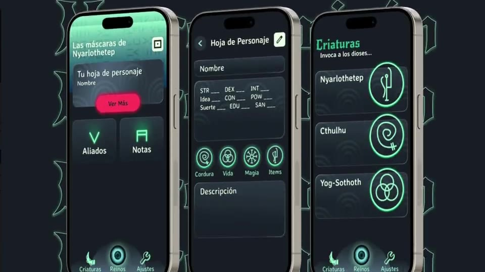

Designs that tell stories
I design experiences that connect with people, and bring them to life with development.
- Figma
- Unity
- Unreal Engine
- HTML/CSS
- Adobe
Hi there, I'm Ale, Technical Designer specializing in UX/UI for digital media and games.
My specialties include user-centered design, prototyping, and storytelling.
Projects
Here's a brief view of my work :)



About me
I'm based in Bogotá, Colombia, where I earned my Bachelor's degree in Interaction Design.
I've worked professionally in game development, web building, and QA testing, which sharpened how I read user and player psychology. Now, I bring that same criteria and design thinking to how I design interfaces, prioritizing functionality while maintaining a strong visual identity.
Latest focus
I have an open mindset towards AI integration and am currently exploring best practices for using it in implementation workflows for pipeline automation.
Click to read some fun facts!
Outside of work, I love spending my time playing the drums, gaming, overanalyzing movies, and making art & DIY projects.
You'll usually find me in game jams!
I'm really into video editing and fanart…
Design skills
- User flows
- Information Architecture
- Wireframing
- Prototyping
- UI Design Systems
- UX Writing
- Illustration
Technical range
- Figma
- Photoshop
- Illustrator
- Premiere Pro
- Clip Studio
- Blender
- Jira / Trello
- Unity
- Unreal Engine
- HTML/CSS
- Webflow
- WixStudio
See anything you like?
Let's have a chat!